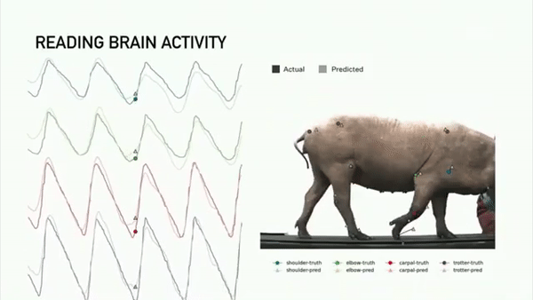
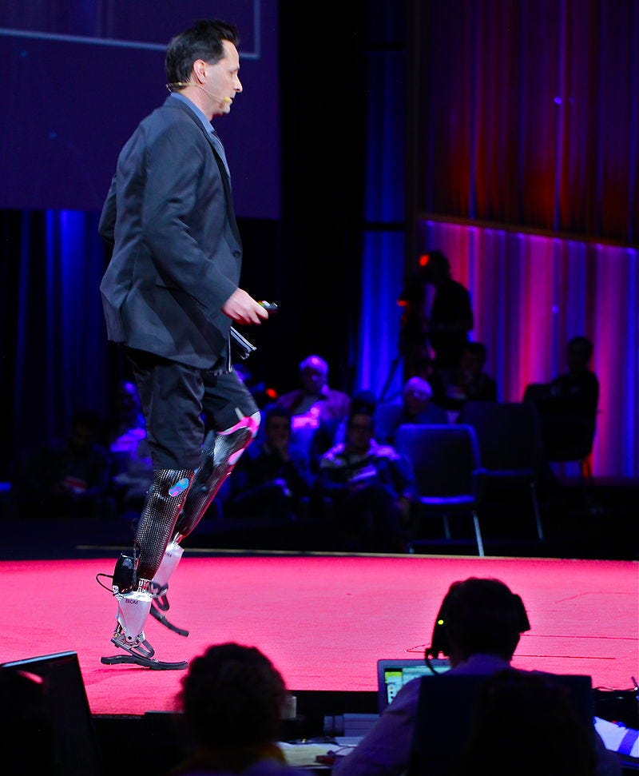

How VR Could Bring Transhumanism to the Masses
VR and its sibling tech, mixed and augmented reality, are inspiring people all across the world to re-imagine human-computer interaction. For those with no experience, it’s associated with sci-fi. For people with slightly more experience, it’s strongly associated with gaming. For the industry professionals, it is all about ‘spatial computing’ — the idea that VRcan assist in all kinds of tasks, from learning to creation. All of these are some variation on VR being a useful gadget or gizmo that boosts entertainment, creativity, or productivity. Most are trying to use VR for things we already do, but in an easier or more playful environment, but for all these cases, it is “just” tech.
But what if I told you this rabbit hole goes much, much deeper?
What if I told you that there is a niche group of techno-philosophers who have dared to ask ‘what is the ultimate potential of technology?’
And that VR could be what bridges the gap between theory and practice?
Enter transhumanism. You might have heard passing references to it in sci-fi or from people in fringe communities (out of respect, I will not call them conspiracy theorists, but that is who I mean). But what IS it, fundamentally?
Here’s the complicated philosopher definition:
Transhumanism is the intellectual and cultural movement that affirms the possibility and desirability of fundamentally improving the human condition through applied reason, especially by developing and making widely available technologies to eliminate aging and to greatly enhance human intellectual, physical, and psychological capacities.
We can do better though. Let’s try this:
Transhumanism is the idea that improving things with technology is always a good thing. No limits. Yes, even people. Especially people.
When said like this, it almost sounds obvious, right? Who doesn’t like improvements? The tricky part is that everyone’s idea of ‘improvement’ is different, but for now, just think about the things you consider an improvement, and really stew on that ‘no limits’ bit, because it’s where the exciting ideas come from! Prosthetic limbs and brain implants are two of the most popular, but they barely scratch the surface. Go ahead, spend a few minutes and think about everything about your experience and self that you think should be improved. Unless you think you are literally perfect, there has to be something.
Because your brain doesn’t actually have a direct connection to the material world, it has to completely, 100% trust the signals that it gets from the senses. You don’t see with your eyes. You see with your brain! What does this mean? Add a virtual mirror and some body tracking, and something incredible happens. Your mind will start to accept the virtual body as the real one. The better the tracking, and the more senses you bring in via haptics, and the longer you stay in there, the stronger and deeper the effect is. I love my virtual body deeply and unapologetically. I don’t even consider my physical body to be the preferred one anymore. It’s got some cool life-support features but ultimately, I didn’t choose it and for that reason, it’s not my favorite.
What does this have to do with VR though?
Lets start with closeness to, and intimacy with, the body: VR is the most compelling case for wearable high-tech. And there is SO much tech to wear. Head mounted displays, haptic gloves, backpack computers, body tracking pucks. It can all be quite a lot!
The other connection is that VR tech doesn’t just transport us to other worlds. VR strongly controls our senses, while also precisely measuring our bodies in real time. Because a huge part of who you
are is created by what you perceive and do,VR lets people alter and re-program themselves. And with AR/MR, you can add artificial sensors such as infrared, magnetic, and thermal to create completely new artificial senses. Most people just don’t know it yet.
The early stages of this are here already. VRChat is full of people inhabiting avatars with drastically different forms than any physical body.
Sure. Current VR ‘me’ isn’t that far divorced from humanity. It’s a stylized and only slightly impossible form. But it is so very, very far
from the full story of what is possible. In VR there are lots of people bonding with furry avatars, or various inanimate objects brought to life via body tracking (I call this endocism). During a social event recently, one of my colleagues was a bowling pin. My wife recently had a stint as a roomba.
And of course, because of the ‘brain must accept what it is told’ effect, this isn’t limited to the virtual world. In the future it might be possible to recreate my virtual body in the real world as a full body prosthesis. Or you could inhabit and embody a drone swarm, coated in sensors of various types, with grippers for moving things. A common first idea for some people is a prehensile tentacle. Some might decide to embody their entire house, fill it with artistic and industrial tools. If you can hook it up to a brain, it can be your form. Doesn’t matter whether it’s physical or virtual, given enough time, energy, and effort, you can become pretty much anything within the laws of physics. Physics is permissive, it is our current level of technology that is the limit.
But this idea of radical freedom in body and mind still has a long way to go. When the press covers Gabe Newell talking about BCI for gaming, when they talk about Elon Musk’s Neuralink project, many reactions from the general public are of shock or disbelief. They’re un-initiated and don’t understand the infinite potential benefit. Even most VR users aren’t even thinking in these terms, they’re just having a blast exploring virtual worlds with their friends. And most VR devs are just fighting hard to make money on their art.
So how could VR bring the idea, and practice, of transhumanism to the masses? Why would VR of all things cause people to entertain the idea of altering themselves physically? Sometimes drastically?
Incentives and desires. People are always demanding a better experience from their tech. More convenient, faster, more fidelity. VR’s expectation escalation is particularly high, even compared to the rest of consumer tech. And for power users, the desire to absolutely have the best experience possible is even stronger. They’ll do anything.
Let’s look at a specific example. Haptics. Talk to any VR enthusiast and they will tell you that haptics is one of the biggest missing pieces in VR right now. And any VR engineer will tell you that haptics is one of the hardest things to pull off in VR. Check out what is arguably the best haptic solution on the market:
It’s incredible. An engineering achievement. Users rave about the fidelity and quality of experience. They can feel individual raindrops on their hands! But it’s huge. It’s expensive, there are many parts that can wear out. I’m one of the biggest lovers of backpack PCs in all of VR, but look at the size of that backpack pneumatic unit! The don/doff friction for this is obscene. This isn’t because the team did anything wrong. They are competent, skilled people on the cutting edge. This is due to the nature of wearable haptics. Your skin is the largest organ you have, and while the density varies, every inch of it is packed with incredibly fine sensors that can tell the difference between hot, cold, sliding, pushing, and texture. To provide touch inputs that satisfy the most demanding user, those forces need to actually be re-created on the person’s skin. This has hard physical requirements for mass and volume, and they get worse the more of the body you try serving. Miniaturization will be very hard!
And yet users want it to be effortless. They want it on all the time, they want it to be in the smallest form factor possible. They want it to be inexpensive, impossible to lose or have stolen, and they want it to use almost zero power. Doing all of this at once with a wearable device… might not be possible. But if you go directly to the nerves using implantable stimulators, suddenly it seems a lot easier. Electrodes can be tiny. The circuits to control them don’t need to be very large either. It can all fit under the skin, or even under the skull.
It’s not just haptics either. Full body tracking is in a similar situation, though it is not nearly as compelling of a case as haptics. 6 point tracking using a headset, controllers, and foot trackers is nice. But it has problems. It doesn’t track that much of the body, the software has to guess at many parts of the body’s pose and sometimes it’s just not right. Try moving your shoulders with a vive tracker + index setup and you’ll see what I mean. This setup also confines you to a fixed region of physical space. You can’t walk around your whole house. If they lose sight of the base stations, they stop working. But the vive tracker isn’t top of the line, surely, like in our haptic example, spending more money gets you something better?
Well, in many ways it does. Check out a xSens mocap suit:
Far more convenient, and the tracking data quality is vastly superior. There are still problems though. Try wearing one for a week straight and it’ll get pretty nasty. Every time you want to use the tracking, you have to make a conscious choice to do so, and you have to put effort into taking it on and off. It can be lost or stolen. If you start getting hot or sweaty, and you take the suit off, your body tracking ability goes away. Also, these suits are fairly expensive. The pricing isn’t public but some estimates I found put them between $12,000 and $30,000
Implants are once again starting to look pretty attractive. Neuralink has already demonstrated full body tracking in a living creature, with a very small implant, installed by an automated, better-than-human procedure.

Imagine never having to put on tracking pucks or a suit ever again.
Just like with haptics, most of the issues I mentioned before disappear. It’s convenient, can go with you anywhere, and is always on as long as you charge it while you’re sleeping. You don’t have to worry about staying dry to protect your electronics. Sounds pretty slick huh? Oh and you can probably get your haptics and full body tracking from the same implant, or at least two or more of them implanted in nearby brain regions. In general, for the truly committed, implantables win out over wearables.

Tired of tired legs while doing standing VR? Why not upgrade to legs that don’t get tired? (Image is from Hugh Herr’s TED Talk)
Sure, the installation process might be painful. It might seem extreme at first, but remember: some power users will endure anything for better VR (and AR). Their experience and funding will feed into a cycle of making implantation surgery less painful and less expensive, until one day modifying the physical self is as easy as using a character creation tool in a video game. Technology is constantly improving, and soon we will have the opportunity to improve with of it.
And not only does VR provide a convenient, compelling, accessible application for transhumanist practice, it can actively make the process of human augmentation easier and less risky. Say you want to do something drastic to your body, like replace a healthy limb with a prosthetic one. You could use a virtual copy of the prosthetic to ‘try it on’ first to ensure that you like what you’re getting before making the change permanent. This has kind of already happened — candidates for the Modular Prosthetic Limb sometimes use a VR training environment to practice with the device, since hands-on training time with it is scarce. VR and AR will certainly make interacting with body modifications much easier. Which would you prefer, changing the stiffness of your artificial joints with a smartphone app? Or by simply looking at it and getting some virtual buttons and sliders? What about for inspecting its maintenance data? Look at a table of numbers, or see right through the thing and directly observe how damaged each part is, with a heatmap that shows time till needed replacement?
And with this, I think we can call the central point settled. Once the hardcore VR users start getting comfortable with modifying their bodies in pursuit of their passion, they will have real, hands-on experience with transhumanist ideas. And the practices of the power users will slowly, but surely disseminate into the other users, and eventually into the general public. They will be able to explain these ideas and applications in better terms than dense academic textbooks. Whether through word of mouth, or the UX of the tech improving, it will be an idea who’s time has come and it won’t just be academic anymore. And if one is already using VR for human augmentation, why not use other technologies? Why not get all the super powers?
. . .
Transhumanism, while simply stated, has nearly infinite second and third order levels to it. It is a rich philosophy that is compatible with many political views, and ethical models. I tried to make this article as accessible and narrowly scoped as possible. The idea might scare you, and you may have many valid (but addressable!) concerns. I encourage you to read more works by transhumanist authors. I hope that one day I will be able to write about common related issues/perceived consequences of transhumanism such as techno-authoritarianism, the digital divide, ableism, gerontocracy, and more. For now though I had to keep this one readable, and since it’s been 3 years since my last article… don’t wait too long.
And one last thing — VR hardware and software developers… you are not making just another gadget or app to sell to people. You are making artificial, external-enclosure brains and wearable sense organs that people will literally assimilate into themselves. Treat your customers with the care and love they deserve.